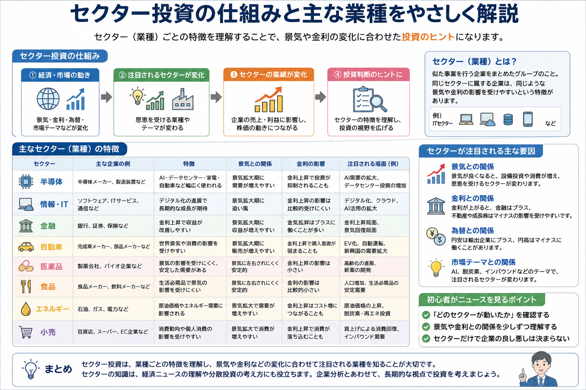

投資の基礎知識
セクター投資とは？業種ごとの特徴やメリット・注意点を初心者向けに解説
株式市場では、企業を半導体・情報通信・金融・自動車・医薬品・食品などの業種ごとに分けて見ることがあります。セクター投資は、業種ごとの特徴や景気・金利・為替との関係を理解し、投資先や保有資産の偏りを考えるための方法です。
Overview
セクター投資の仕組みを最初に整理

- 企業は事業内容によって複数のセクターに分類されます。
- 同じ市場でも、業種によって株価が動く理由は異なります。
- 景気・金利・為替・商品価格・政策などがセクターごとに違う形で影響します。
- セクター分析は企業分析を補う材料であり、単独で投資判断を決めるものではありません。
Definition
セクター投資とは？
セクター投資は、企業を業種ごとにまとめて特徴を比較し、どの業種が現在の市場環境から影響を受けやすいかを考える投資方法です。
セクターの意味
企業を業種ごとに分けたグループ
セクターとは、似た事業を行う企業をまとめた分類です。金融、情報通信、医薬品、食品などに分けることで、企業同士の共通点や違いを見やすくします。
分類する理由
株価が動く要因を整理しやすい
銀行は金利、輸出企業は為替、エネルギー企業は資源価格など、業種によって重要な材料が異なります。分類するとニュースの影響を理解しやすくなります。
基本的な使い方
投資先と保有資産の偏りを確認する
特定業種への投資だけでなく、保有銘柄が同じセクターへ偏っていないかを確認するためにも使われます。
セクターの分類方法は一つではありません。国内市場の業種分類、世界的な株価指数の分類、証券会社独自の分類などによって、名称や企業の分け方が異なる場合があります。
Sector Types
主なセクターの種類
代表的な8つのセクターについて、特徴と影響を受けやすい材料を比較します。同じセクターでも企業ごとに事業内容や収益構造は異なります。
| セクター | 主な特徴 | 影響を受けやすい材料 | 初心者が見るポイント |
|---|---|---|---|
| 半導体 | AI、スマートフォン、自動車、データセンターなど幅広い産業を支える | 世界景気、設備投資、在庫、金利、輸出規制 | 需要の成長だけでなく、在庫調整や期待の織り込みも確認する |
| 情報・IT | ソフトウェア、通信、クラウド、インターネットサービスなどを含む | 金利、企業のIT投資、新技術、利用者数 | 成長率と利益の出し方、競争環境を見る |
| 金融 | 銀行、証券、保険など、お金の流れを支える | 金利、景気、貸出需要、信用コスト | 金利上昇が必ずすべての金融企業に有利とは限らない |
| 自動車 | 完成車、部品、電池、素材など関連産業が広い | 為替、海外景気、原材料価格、販売台数 | 輸出比率や地域別販売、電動化への対応を見る |
| 医薬品 | 医薬品や医療関連サービスを扱い、景気変動の影響が比較的小さい場合がある | 新薬開発、承認、特許、薬価制度 | 開発成功の不確実性と主力製品への依存を確認する |
| 食品 | 生活に必要な商品を扱い、需要が比較的安定しやすい | 原材料価格、物流費、為替、値上げ | コスト上昇を価格へ転嫁できるかを見る |
| エネルギー | 石油、ガス、電力、再生可能エネルギーなどを含む | 原油・天然ガス価格、政策、地政学 | 商品価格だけでなく設備投資と規制も確認する |
| 小売 | 百貨店、スーパー、専門店、ECなど消費者向け販売を行う | 個人消費、賃金、物価、訪日需要 | 既存店売上、客数、単価、在庫を見る |
※ スマートフォンでは横にスクロールできます。
「半導体」「AI」「高配当」などは市場テーマとして語られることもあります。業種分類とテーマ分類は重なる場合がありますが、完全に同じものではありません。
Market Environment
なぜ注目されるセクターが変わるの？
投資家が重視する材料は、景気局面や金融政策によって変化します。そのため、株式市場で買われやすい業種も一定ではありません。
景気との関係
景気が回復すると、自動車、機械、素材、小売などの需要増加が期待される場合があります。一方、景気減速時には食品や医薬品など、需要が比較的安定した業種が注目されることがあります。
金利との関係
金利上昇は銀行の収益環境を改善する場合がある一方、将来利益への期待が大きい成長株の評価を抑えることがあります。ただし企業ごとの資金調達や事業構造によって影響は異なります。
為替との関係
円安は海外売上の多い輸出企業に追い風となる場合がありますが、輸入原材料やエネルギーコストを押し上げる場合もあります。円高では逆の影響が出ることがあります。
市場テーマとの関係
AI、脱炭素、防衛、インバウンドなどのテーマが注目されると、関連セクターへ資金が集まることがあります。ただし人気化した後は期待が株価へ織り込まれている場合があります。
大切な点：市場環境とセクターの関係は、単純な公式ではありません。同じ金利上昇でも、上昇の理由や速度、企業の財務状況によって株価の反応は変わります。
Advantages
セクター投資のメリット
興味のある業界
理解しやすい分野から企業を調べられる
普段使う商品やサービス、仕事で関わる業界など、身近な分野から企業分析を始めやすくなります。
分散投資
業種の偏りを確認できる
複数銘柄を持っていても、すべて同じ業種なら共通の悪材料で同時に下落する可能性があります。セクターを見ると実質的な偏りを確認できます。
ニュース理解
経済ニュースと株価を結びつけやすい
金利、為替、原油価格、消費、設備投資などのニュースが、どの業種へ影響しやすいか考えられるようになります。
Cautions
セクター投資の注意点
同じセクターでも企業ごとに業績は異なる
同じ金融業でも銀行・証券・保険では収益構造が違います。半導体でも設計、製造、装置、材料では影響を受ける材料が異なります。業種が同じという理由だけで同じ値動きになるとは限りません。
人気テーマだけで投資判断しない
注目度が高いセクターは、成長期待がすでに株価へ織り込まれている場合があります。「話題だから上がる」と考えず、業績、株価水準、競争環境、リスクも確認する必要があります。
分散投資も意識する
一つのセクターへ集中すると、その業種に共通する悪材料の影響を強く受けます。業種だけでなく、企業、地域、資産、投資時期など複数の観点で偏りを確認することが大切です。
Beginner Checklist
初心者が知っておきたいポイント
セクター投資をすぐに実践する必要はありません。まずは毎日のニュースや株価指数を見るときの整理方法として活用できます。
- どのセクターが動いたか確認する
日経平均やTOPIXが上昇・下落したとき、すべての業種が同じ方向へ動いたのか、一部の業種が指数を動かしたのかを確認します。
- 景気や金利との関係を少しずつ理解する
景気回復、利上げ、円安、原油高などのニュースが出たとき、どの業種に追い風・逆風となりやすいかを考えます。
- セクターだけで企業の良し悪しを決めない
業種全体に追い風があっても、個別企業の業績や財務状況が弱ければ株価が上がらない場合があります。最後は企業ごとの確認が必要です。
- 指数の上昇率だけでなく業種別騰落率も見る
- ニュースの材料が短期要因か長期要因か分けて考える
- 一つの原因だけで株価の動きを説明しない
- 市場テーマと企業業績を混同しない
Related Articles
関連する投資の基礎知識
セクターごとの値動きを理解するには、株価指数・金利・ETF・分散投資などの基礎もあわせて確認すると理解が深まります。
FAQ
セクター投資に関するよくある質問
セクター投資とは何ですか？
企業を業種ごとのグループであるセクターに分け、その業種の特徴や市場環境を意識して投資先を考える方法です。特定の業種だけに集中する場合だけでなく、保有資産の業種分散を確認するためにも使われます。セクターはいくつありますか？
分類方法によって数や名称は異なります。日本の証券取引所の業種分類、世界的な株価指数で使われる分類、証券会社独自の分類などがあり、唯一の決まった数があるわけではありません。初心者はどのセクターを見るべきですか？
最初から一つに絞る必要はありません。日常で理解しやすい業種や、ニュースで話題になった業種から、景気・金利・為替・企業業績との関係を少しずつ確認すると理解しやすくなります。セクターETFとは何ですか？
特定の業種やテーマに属する複数企業へまとめて投資することを目指すETFです。個別株より分散しやすい一方、対象セクター全体が下落すればETFの価格も影響を受けます。セクターだけで投資判断しても良いですか？
セクターだけで判断するのは十分ではありません。同じ業種でも企業ごとに事業内容、収益力、財務状況、株価水準は異なるため、個別企業の分析や分散投資の考え方も必要です。
Summary
まとめ｜セクター投資は業種ごとの特徴を理解する考え方
- セクター投資は、企業を業種ごとに分けて特徴や市場環境との関係を考える方法です。
- 半導体、IT、金融、自動車、医薬品、食品、エネルギー、小売など、業種ごとに注目材料は異なります。
- 景気、金利、為替、市場テーマによって注目されるセクターは変化します。
- 経済ニュースを理解し、保有資産の業種分散を確認するためにも役立ちます。
- セクターだけで企業の良し悪しは決まらないため、個別企業の業績や財務状況もあわせて確認することが大切です。
Next Step
株価指数と分散投資の基礎も一緒に確認する
セクターごとの動きを見るときは、日経平均だけでなくTOPIXも確認し、特定の業種へ偏っていないかを考えると市場全体を理解しやすくなります。
ご利用にあたっての注意事項
本記事は一般的な情報提供と金融教育を目的としており、特定の企業・業種・銘柄・ETF・証券会社の推奨や、投資の勧誘を目的としたものではありません。株式や投資信託などの金融商品は元本保証がなく、相場変動、為替変動、信用状況、制度変更などにより損失が生じる場合があります。取引を行う際は、最新の公式情報、契約締結前交付書面、目論見書などを確認し、ご自身の判断と責任で行ってください。